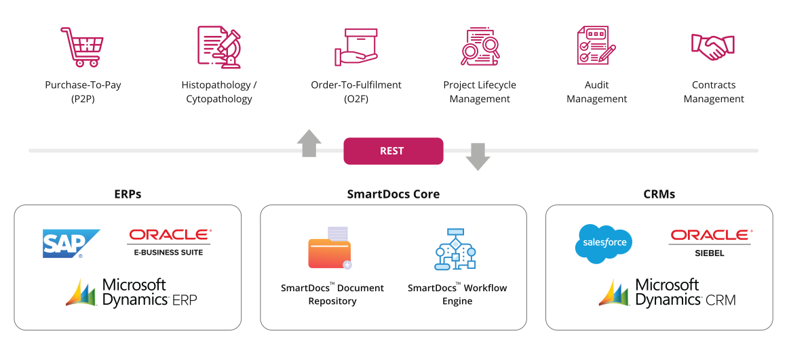

In today’s age of digital disruptions, global companies need to constantly embrace change to keep pace with the complex,
volatile and ever-evolving business landscape. Success in the digital age depends on transformative thinking and having the right
set of platforms to quickly convert these thoughts to action.
SmartDocs is our leading solution to “enable digital transformation” in your organization. It extends a plethora of features to organizations for efficient management of enterprise content as well as automate business processes and workflows.
It helps companies with content management using workflows, audit and compliance, internal and external stakeholder collaboration. It provides powerful 256-bit AES encryption, multi-language support, multi-device accessibility for users and supports SaaS, on-premises as well as hybrid installations.
SmartDocs is our leading solution to “enable digital transformation” in your organization. It extends a plethora of features to organizations for efficient management of enterprise content as well as automate business processes and workflows.
It helps companies with content management using workflows, audit and compliance, internal and external stakeholder collaboration. It provides powerful 256-bit AES encryption, multi-language support, multi-device accessibility for users and supports SaaS, on-premises as well as hybrid installations.
Key Security Features

Content Encryption
Device Encryption
Secure Achitecture
IP Whitelisting

Permissions
Detailed logs
SmartDocs has a powerful workflow engine for rapid development and deployment of workflow-based enterprise applications. Leverage the power of SmartDocs Application Framework and the Workflow and Content Repository layers in the backend, to build easy-to-use, secure and scalable enterprise applications using the low-code features of the platform.
Our SmartDocs implementation team brings rich expertise and proven methodologies to our client portfolio with B2B secured collaboration, process automation and workflows with low-code model.
Build Enterprise Applications on SmartDocs
Rapid Development of Custom Applications through SmartDocs™ Application Framework
